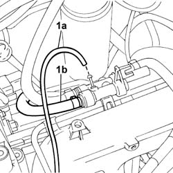
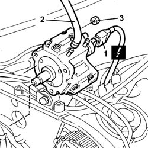

1060E10 PRESSURE PUMP for diesel injection - R.R.
- Path
- Procedures > 10 ENGINE > 1060 DIESEL FUEL INJECTION SYSTEM > 1060E DIESEL PRESSURE PUMP > 1060E10 PRESSURE PUMP for diesel injection - R.R.
- Kind
- repair procedure (removal / refitting; the operation number is the code)
- Applies to
- engines: 2.4 JTD 10V; all production periods
- Interactive page
- https://sloeber94.github.io/elrnDB-lThss/en/#/100655
Applies to: engines: 2.4 JTD 10V; all production periods
 Removing
Removing
 Refitting
RefittingSee in Op. 7040D50 ENGINE COMPARTMENT UPPER SOUND INSULATION SHIELD - R.R.
- Position the vehicle on a lift.
- Open the boot and disconnect the negative battery terminal.
See in Op. 1016A10 SOUND-PROOFING COVER - R.R.
See in Op. 7055B54 PROTECTION/GUARD under engine - R.R.
See in Op. 4450B04 Right FRONT WHEEL (one) - R.R.
See in Op. 7055B42 FRONT WHEEL ARCH LINER (one), left or right - R.R.
See in Op. 7055B64 Engine compartment DUST SEAL in front wheel arch (one), left or right - R.R.
See in Op. 1092G10 Engine components single drive BELT - R.R.
See in Op. 1032D12 Timing system protective COVER(S) - R.R.
See in Op. 1032B10 TOOTHED timing BELT - R.R. for timing adjustment or replacement
See in Op. 1060E30 PRESSURE PUMP drive PULLEY - R.R.
See in Op. 1060F20 PIPE from PRESSURE PUMP to FUEL MANIFOLD - R.R.
See in Op. 1060F34 PIPE from fuel MANIFOLD to INJEJCTOR - R.R.
1. Disconnect the fuel pipe for lubricating the injectors (1a) and the fuel return pipe to the pressure pump (1b) from the fuel return manifold pipe.
- Undo the fixing nuts and release the fuel return manifold from the housing in the intake manifold.

Applies to: engines: 2.4 JTD 10V; all production periods
1. Disconnect the electrical connection for the fuel pressure regulator.
 | Description | Connector |
|---|---|---|
1 | Fuel pressure regulator | N077 |
2. Disconnect the fuel supply pipe from the tank from the pressure pump.
3. Undo the nuts fixing the pressure pump to the mounting.
- Remove the pressure pump.

Applies to: engines: 2.4 JTD 10V; all production periods
Refitting
Removing- Fit the pressure pump fastening it to the studs on the pump mounting.
- Tighten the fixing nuts to torque.
 | Value - daNm | Fastening | Component | Ø |
|---|---|---|---|---|
. | 2.5 | Nut | PRESSURE PUMP | M8 |
- Connect the fuel supply pipe from the tank to the pressure pump.
- Connect the electrical connection for the fuel pressure regulator.
| Description | Connector |
|---|---|---|
. | Fuel pressure regulator | N077 |
- Fit the fuel return manifold in the housing on the intake manifold.
- Tighten the fixing nuts to torque.
- Connect the fuel pipe for lubricating the injectors and the fuel return pipe to the pressure pump.
See in Op. 1060F34 PIPE from fuel MANIFOLD to INJEJCTOR - R.R.
See in Op. 1060F20 PIPE from PRESSURE PUMP to FUEL MANIFOLD - R.R.
See in Op. 1060E30 PRESSURE PUMP drive PULLEY - R.R.
See in Op. 1032B10 TOOTHED timing BELT - R.R. for timing adjustment or replacement
See in Op. 1032D12 Timing system protective COVER(S) - R.R.
See in Op. 1092G10 Engine components single drive BELT - R.R.
See in Op. 7055B64 Engine compartment DUST SEAL in front wheel arch (one), left or right - R.R.
See in Op. 7055B42 FRONT WHEEL ARCH LINER (one), left or right - R.R.
See in Op. 4450B04 Right FRONT WHEEL (one) - R.R.
-
See in Op. 7055B54 PROTECTION/GUARD under engine - R.R.
See in Op. 1016A10 SOUND-PROOFING COVER - R.R.
See in Op. 7040D50 ENGINE COMPARTMENT UPPER SOUND INSULATION SHIELD - R.R.
- Open the boot and connect the negative battery terminal.
- Remove the vehicle from the lift.
Topics linked from this page (12)
- 1016A10 SOUND-PROOFING COVER - R.R.
- 1032B10 TOOTHED timing BELT - R.R. for timing adjustment or replacement
- 1032D12 Timing system protective COVER(S) - R.R.
- 1060E30 PRESSURE PUMP drive PULLEY - R.R.
- 1060F20 PIPE from PRESSURE PUMP to FUEL MANIFOLD - R.R.
- 1060F34 PIPE from fuel MANIFOLD to INJEJCTOR - R.R.
- 1092G10 Engine components single drive BELT - R.R.
- 4450B04 Right FRONT WHEEL (one) - R.R.
- 7040D50 ENGINE COMPARTMENT UPPER SOUND INSULATION SHIELD - R.R.
- 7055B42 FRONT WHEEL ARCH LINER (one), left or right - R.R.
- 7055B54 PROTECTION/GUARD under engine - R.R.
- 7055B64 Engine compartment DUST SEAL in front wheel arch (one), left or right - R.R.